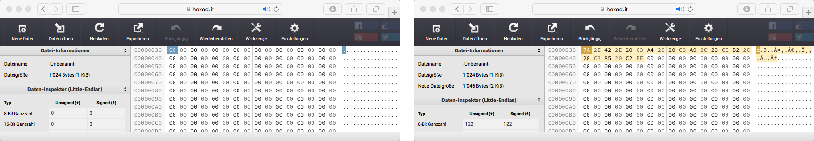

Digitale Computer können nur Zahlenwerte speichern und verarbeiten. Digitalisierung bedeutet deshalb "Abbildung auf Zahlenwerte".
Bei der Digitalisierung von Text werden die einzelnen Zeichen (Buchstaben, Ziffern, Interpunktionszeichen, usw.) je auf einen Zahlenwert abgebildet. Eine derartige Abbildung bezeichnen wir als Code.
In den Anfängen der Nutzung von digitalen Rechnern erfolgte die Abbildung von Texten auf Zahlenwerte mit dem American Standard Code of Information Interchange (ASCII).
Der ASCII umfasst 128 Zahlenwerte (0 .. 127). Damit sind nur die Zeichen von englischsprachigen Texten darstellbar; spezielle Zeichen anderer Sprachen (z.B. ä, é, β, Å ¿) können nicht auf ASCII-Codes abgebildet werden.
Firmen, die ihre Computer in nicht englischsprachigen Ländern verkaufen wollten, haben deshalb den ASCII-Code auf 256 Zahlenwerte erweitert (0 .. 255). Diese Erweiterungen sind aber teilweise unterschiedlich:
Microsoft Windows 1252
Code 128 ↔ €
Apple Mac OS Roman
Code 128 ↔ Ä
Der Unicode dient dazu, die Abbildung der Zeichen aller Schriftsprachen auf Zahlenwerte zu vereinheitlichen. Der Unicode umfasst über 900'000 Zahlenwerte, wobei die ersten 128 Werte (0 .. 127) den Werten des ASCII-Codes entsprechen.
Damit der Speicherplatzbedarf für Texte wegen der grossen Zahlenwerte des Unicodes nicht stark zunimmt, wird in der Praxis eine platzsparende Codierung der Unicode-Werte verwendet. Üblicherweise ist dies die 8-Bit Universal Character Set Transformation (UTF-8).
Nutzen Sie das Online-Tool HexEd.it, um die UTF-8-Codes eines digitalen Textes zu analysieren. Markieren Sie die nachstehende Zeichenfolge, kopieren Sie sie in die Zwischenablage (copy) und fügen Sie sie dann in HexEd.it ein (paste -> Daten an der Cursor-Position einfügen).
[ a, 3, ä, é, β, Å ¿ ]
